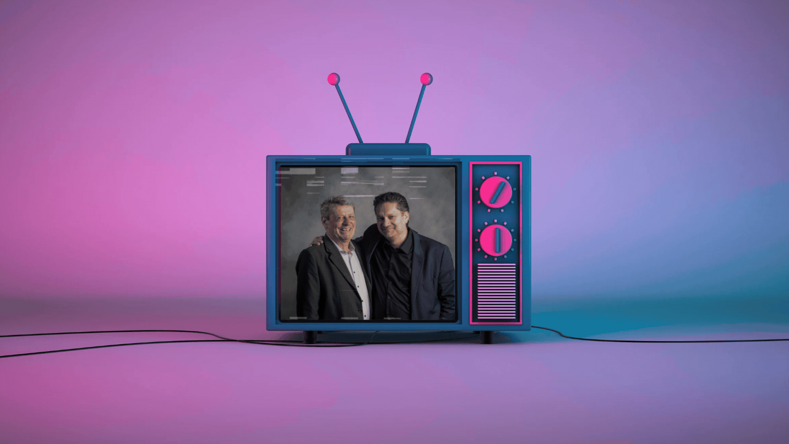

Parler aux médias
ne s'improvise pas.
Cela se prépare.
Dans un environnement médiatique exigeant, chaque intervention publique engage la crédibilité d'un dirigeant et de son organisation. Media Impact accompagne ceux qui prennent la parole — pour que chaque intervention compte.


Trois axes pour une prise de parole maîtrisée
Structurer le message
La clarté du message est la condition de son impact. Nous travaillons avec chaque intervenant pour définir un socle de communication simple, mémorable et résistant à la pression journalistique.
Maîtriser la communication non-verbale
Ce que le corps communique est aussi important que les mots. Un dirigeant crédible en télévision maîtrise sa posture, son regard et son rythme — indépendamment du stress.
S'entraîner en conditions réelles
La maîtrise s'acquiert par la pratique, pas par la théorie. Nos sessions intègrent des simulations filmées avec débriefing immédiat — pour ancrer les bons réflexes avant l'interview réelle.
Formés par les médias,
au service de ceux qui les affrontent
Les fondateurs de Media Impact sont eux-mêmes issus du journalisme — radio, presse écrite, presse financière. Ce parcours nous donne une compréhension de l'intérieur de ce que cherche un journaliste, comment il travaille et ce qui fait une bonne interview.
Cette connaissance des deux côtés du micro est au cœur de notre approche du media training.
Expérience journalistique directe
Nos formateurs ont été journalistes — radio, presse économique, institutions financières. Ils savent ce que cherche vraiment un journaliste.
Sur mesure, pas générique
Chaque session est construite autour du profil du participant, de ses enjeux spécifiques et du contexte médiatique de l'intervention prévue.
Simulations filmées
Toutes les simulations sont filmées. Revoir sa propre prestation est le levier d'amélioration le plus puissant — sans concession.
Contexte suisse maîtrisé
Connaissance approfondie des médias suisses romands, des codes locaux et des spécificités du paysage médiatique helvétique.
Situations qui nécessitent une préparation spécifique
Annonce stratégique majeure
Lancement de produit, partenariat, changement de direction, résultats financiers — toute annonce susceptible d'attirer l'attention des médias exige une préparation spécifique.
Contexte de crise ou de litige
Dans une situation sensible, chaque mot compte. La préparation est la condition sine qua non d'une intervention qui protège l'image sans fragiliser la position juridique.
Première médiatisation
Un dirigeant ou expert qui fait face aux médias pour la première fois a besoin d'ancrer des réflexes solides avant de se retrouver sous les projecteurs.
Médiatisation accrue
Une entreprise qui gagne en visibilité doit anticiper la pression médiatique qui l'accompagne — avant qu'une mauvaise interview ne devienne un problème de réputation.
Une interview prévue ?
Ne la laissez pas au hasard.
Contactez-nous pour organiser une session de media training sur mesure — en individuel ou en groupe.